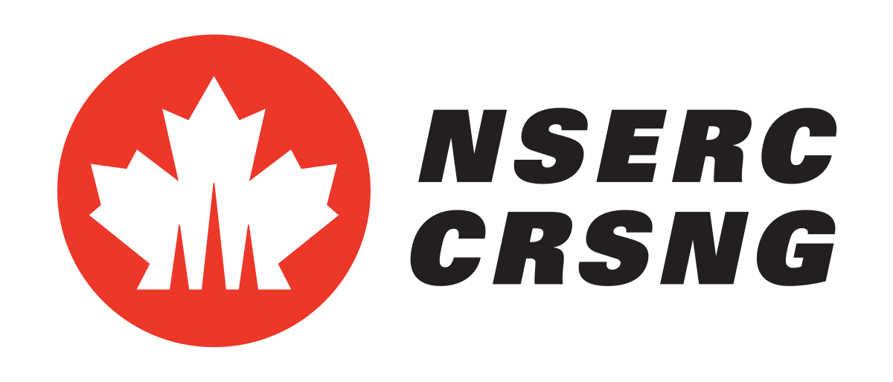
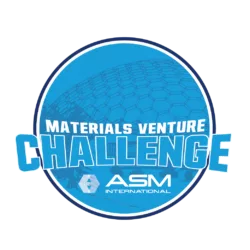

DND/NSERC supplemental funding award, $10,000, 2026

-
DND/NSERC supplemental funding award
The objective of the DND/NSERC supplemental funding award is to encourage highly advanced training and research in the natural sciences and engineering in research fields relevant to national defence for the benefit of Canada.
ASM International IMAT Materials Venture Challenge, US$5,000, 2025
-
Materials Venture Challenge
This competition seeks to support students and entrepreneurs in the early stage of their startup venture; and to recognize their passion, commitment, and excellence in improving and revolutionizing new technologies in the field of materials science and engineering.

Joseph R. Benedetto Scholarship, $1,000, 2025
NSERC Michael Smith Foreign Study Supplements (MSFSS), $6,000, 2024
-
NSERC Michael Smith Foreign Study Supplements (MSFSS)
The Canada Graduate Scholarships – Michael Smith Foreign Study Supplements (CGS-MSFSS) support high-calibre Canadian graduate students in building global linkages and international networks through the pursuit of exceptional research experiences at research institutions abroad.
Mitacs Globalink Research Award (GRA), $6,000, 2025
Poster Prize Award, Aug 2023

NSERC CGS D, $120,000, 2023-2025
Tenure: PhD @ University of Toronto
-
Canada Graduate Scholarships – Doctoral
The Natural Sciences and Engineering Research Council of Canada (NSERC) offers the CGS D to the highest-scored Postgraduate ScholarshipsDoctoral (PGS D) applicants. The prestigious CGS D program allows excellent students to pursue doctoral studies in Canada.
The award is valued at $105,000 over 36 months.
Ontario Graduate Scholarship, $15,000, 2022-2023
Tenure: PhD @ University of Toronto
-
Ontario Graduate Scholarship
The Ontario Graduate Scholarship (OGS) program encourages excellence in graduate studies at publicly-assisted universities in Ontario. Since 1975, the OGS program has been providing merit-based scholarships to Ontario’s best graduate students in all disciplines of academic study.
The award is valued at $15,000 over 12 months.
Ontario Graduate Scholarship, $15,000, 2021-2022
Tenure: PhD @ University of Toronto
-
Ontario Graduate Scholarship
The Ontario Graduate Scholarship (OGS) program encourages excellence in graduate studies at publicly-assisted universities in Ontario. Since 1975, the OGS program has been providing merit-based scholarships to Ontario’s best graduate students in all disciplines of academic study.
The award is valued at $15,000 over 12 months.
Mitacs Globalink Graduate Fellowship, $15,000, 2015
Tenure: MASc @ McGill
Mitacs Globalink Research Internship, $7,500, 2014
Tenure: Research Intern @ U of Calgary
-
Mitacs Globalink Research Internship
Mitacs Globalink Research Internship is a competitive initiative for international undergraduates from the following countries and regions: Australia, Brazil, Chile, China, Colombia, France, Germany, Hong Kong, India, Mexico, Pakistan, South Korea, Taiwan, Tunisia, Ukraine, United Kingdom and the United States.
The award is valued at $7,500 over 3 months.
China National Scholarship, ¥8,000, 2013
Tenure: BEng @ SCUT